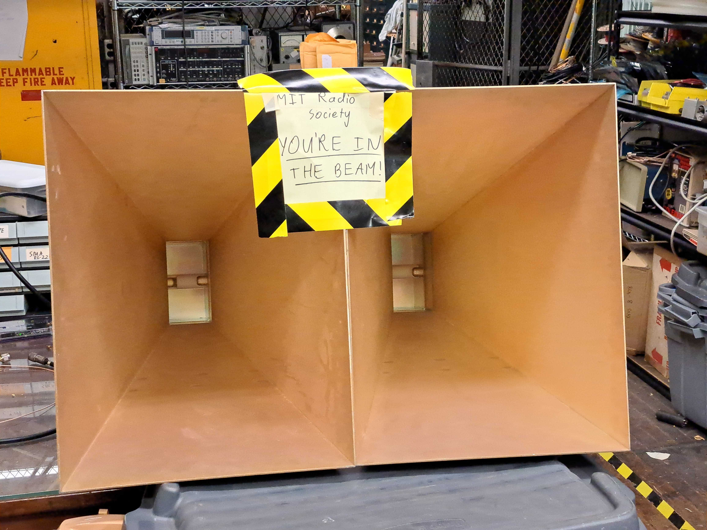
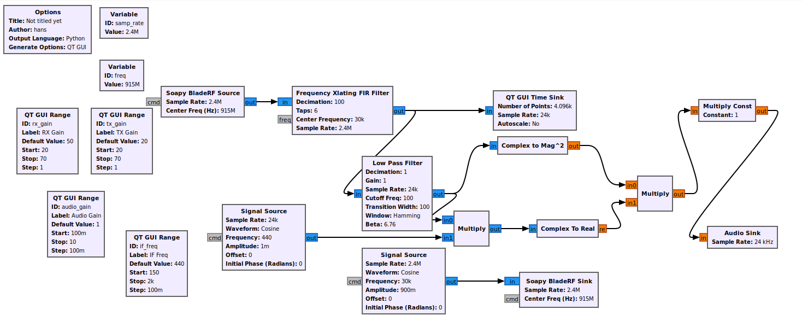

MIT has two club fairs each year where student groups advertise to new students. To promote the MIT radio society, we built an ISM band doppler radar in GNURadio that plays the beat frequency out of a speaker. When students pass in front of it, it makes a very distinct noise and the baseband traces are plotted on a laptop nearby.

